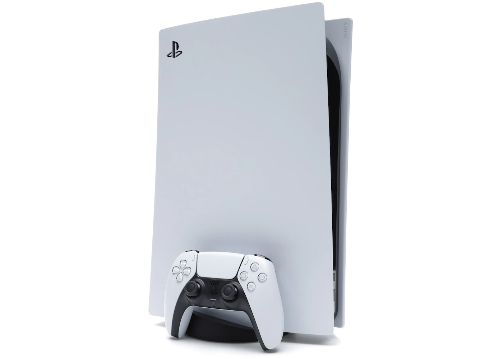

FR - Playstation 5
La PlayStation 5 (abrégée officiellement PS5) est la console de jeux vidéo de salon de neuvième génération développée par Sony Interactive Entertainment. Elle a été officiellement annoncée en avril 2019 et commercialisée le 12 novembre 2020 aux États-Unis, au Canada, en Australie et au Japon, puis le 19 novembre en Europe et dans le reste du monde. Elle succède à la PlayStation 4 et se place en concurrence avec les Xbox Series de Microsoft et la Nintendo Switch de Nintendo.
Évolution de la neuvième génération
La console NEXT-GEN de Sony
La nouvelle génération de console, représentée par la PlayStation 5, présente plusieurs avancées significatives. Elle intègre une technologie de ray tracing exploitant une variante personnalisée de la famille Navi d'AMD Radeon, garantissant des graphismes plus réalistes. De plus, elle offre une compatibilité avec les télévisions à 120 Hz en résolution 4K via un port HDMI 2.1. Le processeur octa-core amélioré, basé sur la microarchitecture Zen 2 d'AMD, assure une puissance de traitement accrue.
En matière de son, la PS5 dispose d'une puce audio plus performante, permettant une gestion audio en trois dimensions pour une expérience sonore immersive. Un changement majeur concerne le stockage, où un SSD très rapide remplace le disque dur, contribuant ainsi à considérablement réduire les temps de chargement des jeux.
Un élément apprécié est la rétrocompatibilité avec les jeux PS4, offrant aux joueurs la possibilité de profiter de leur bibliothèque existante sur la nouvelle plateforme. Dans l'ensemble, ces évolutions marquent une avancée significative dans la nouvelle génération de consoles de jeu.
Architecture matérielle
La Manette sans fil Dualsense

La DualSense, manette sans fil de la PlayStation 5, redéfinit l'expérience de jeu avec des vibrations haptiques réactives et précises, offrant une immersion tactile inédite. Ses gâchettes adaptatives ajoutent une dimension interactive en ajustant la résistance selon le contexte du jeu. Intégrant un microphone, elle simplifie la communication en ligne. Son design ergonomique assure un confort optimal, tandis que la batterie rechargeable et les lumières LED complètent ses fonctionnalités avancées, faisant de la DualSense un élément essentiel pour une expérience de jeu immersive sur la nouvelle génération de consoles.
Caractéristiques techniques
| Microprocesseur | 8 cœurs / 16 threads AMD utilisant la micro-architecture Zen 2, cadencé à 3,5 GHz (fréquence variable) |
|---|---|
| Processeur graphique | Architecture RDNA 2 Navi, 36 CUs cadencés à 2,23 GHz (fréquence variable) ; ray-tracing matériel supporté |
| Indice de performance | 10,28 TFLOPS |
| Finesse de gravure | 7 nm |
| Mémoire vive | 16 Go GDDR6 sur bus 256 bits |
| Bande passante de la mémoire vive | 448 Go/s |
| Puce audio | Tempest 3D Audio Tech (son multicanal) |
| Stockage interne | SSD NVMe PCIE 4.0 d'une capacité de 825 Go |
| Stockage supplémentaire | Port M.2 pour SSD NVMe PCIE 4.0 (dimensions: 38, 42, 60 ou 80 mm) |
| Stockage externe | Disque dur externe via USB (disponible uniquement pour installer les jeux PS4 et stocker les jeux PS5, sans possibilité de lancer ces derniers depuis le périphérique) |
| Opérations d'entrée / sortie | 5,5 Go/s (brut) ou 17,38 Go/s (compressé) |
| Lecteur optique | Lecteur Blu-ray Ultra HD |
| Sortie vidéo | HDMI 2.1 compatible VRR, pouvant offrir une définition 8K |
Comparaison PS5 et Xbox Series X
| Critère | PlayStation 5 | Xbox Series X |
|---|---|---|
| Puissance de calcul | Puissante CPU et GPU offrant des performances élevées. | Performances comparables avec un matériel solide. |
| Stockage | SSD ultra-rapide de 825 Go pour des temps de chargement rapides. | SSD de 1 To offrant également des performances éclair. |
| Rétrocompatibilité | Compatible avec la plupart des jeux PS4. | Rétrocompatibilité étendue avec les jeux Xbox, Xbox 360, et Xbox One. |
| Exclusivités | Fort catalogue d'exclusivités, y compris des titres comme "Spider-Man: Miles Morales" et "Demon's Souls". | Exclusivités solides telles que "Halo Infinite" et "Forza Horizon". |
| Manette | DualSense avec vibrations haptiques et gâchettes adaptatives pour une expérience immersive. | Contrôleur Xbox Series X offrant une conception familière et des améliorations subtiles. |
| Services en ligne | PlayStation Network propose le PlayStation Plus. | Xbox Live avec le Game Pass, offrant un accès à une large bibliothèque de jeux. | Abonnement jeu | PlayStation Plus Extra et Prenium pour l'accès à divers services de jeux. | Xbox Game Pass avec un vaste choix de jeux en téléchargement. |
| Compatibilité accessoires | La plupart des accessoires PS4 compatibles. | La plupart des accessoires Xbox One compatibles. |
| Prix | Prix initial généralement compétitif. | Prix concurrentiel avec une offre Game Pass attractive. |